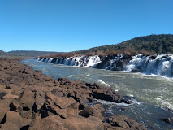

Saltos del Mocona
Infraestructura El Parque Provincial Moconá cuenta una completísima infraestructura para recibir y brindar todos los servicios que nuestros visitantes necesitan. Desde las vías de acceso, la principal, la Ruta Provincial No.2 es una carretera asfaltada en su totalidad que le permite llegar al parque de forma segura y cómoda o tambien pueden llegar por la vía alterna que es el camino de tierra por San Pedro, pero esta recomendamos la transite con vehículos 4x4. Una vez en el parque el visitante cuenta con un nuestro Yabotí Restó, donde podrá disfrutar de exquisitas minutas y cocina gourmet mientras contempla la naturaleza, además dispone de un centro de atención al cliente que contempla un Maxikiosco, venta y exposición de artesanías guaraníes, servicio de guardaparque con toda la información que requiera del parque, sanitarios y atención médica de emergencia. Además el parque cuenta con senderos y miradores para que nuestros visitantes contemplen plenamente la majestuosidad de su naturaleza.
Los saltos del Moconá son unas cataratas de unos 10 m de altura que interrumpen durante unos 3 km el curso del río Uruguay en la frontera entre Brasil y Argentina, al sudeste del departamento San Pedro, en la provincia argentina de Misiones y en el estado de Río Grande del Sur.
Hoy el parque se encuentra HABILITADO
Mientras el caudal del arroyo Yabotí Guazú o Pepirí Miní, uno de los afluentes de mayor importancia que circundan al Parque Provincial Moconá, se encuentre bajo, nos permite abrirles las puertas para que disfruten de las maravillas que San Pedro, Misiones ofrece a sus visitantes.